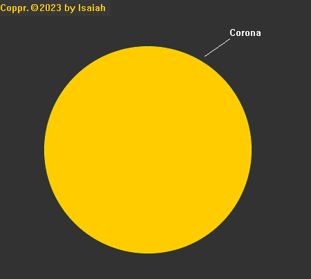

The sun:
The Corona
The outermost part of the atmosphere of the Sun. usually hidden by the bright light of the sun

The Corona during a solar eclipse. (Source: NASA)
The Sun is made up of several layers. Those layers include:
The Corona, the Chromosphere, the photosphere, the convective zone, the radiative zone, and the core.
This modal will provide a visual representation of the Sun’s various layers.
The outermost part of the atmosphere of the Sun. usually hidden by the bright light of the sun
The Corona during a solar eclipse. (Source: NASA)
The second layer of the atmophere. It is a thin layer. The temperature rises from about 6,000°C to 20,000°C (source)
Source: soloarscience.msfc.nasa.gov